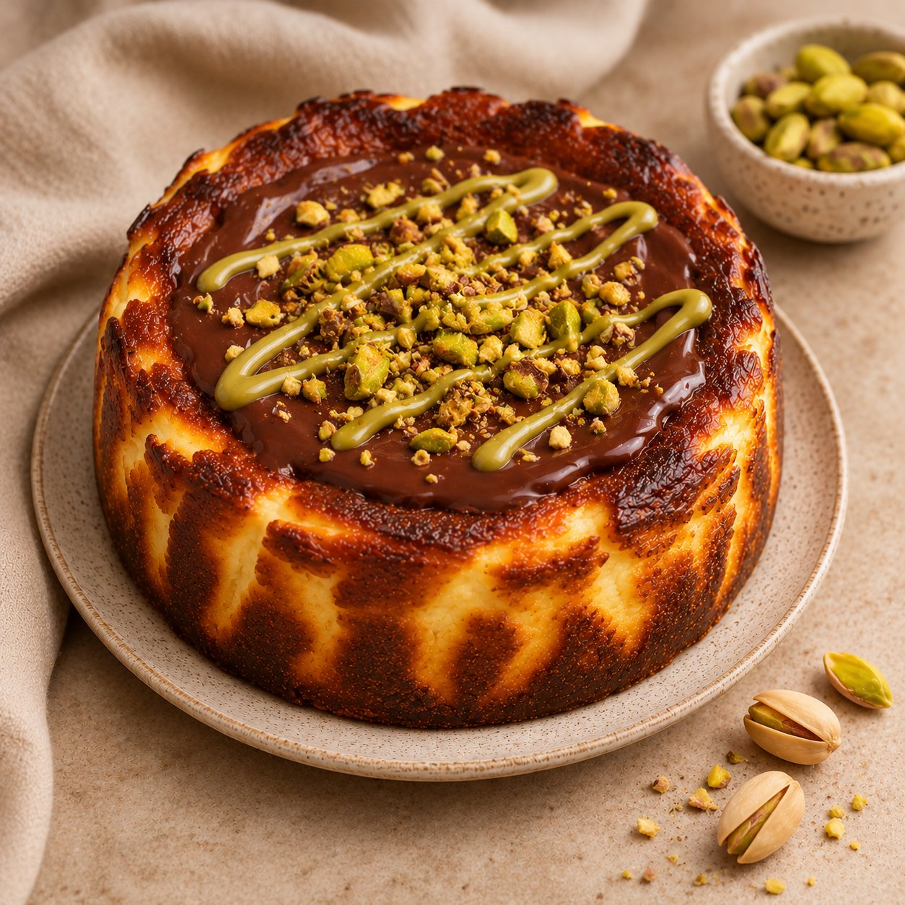
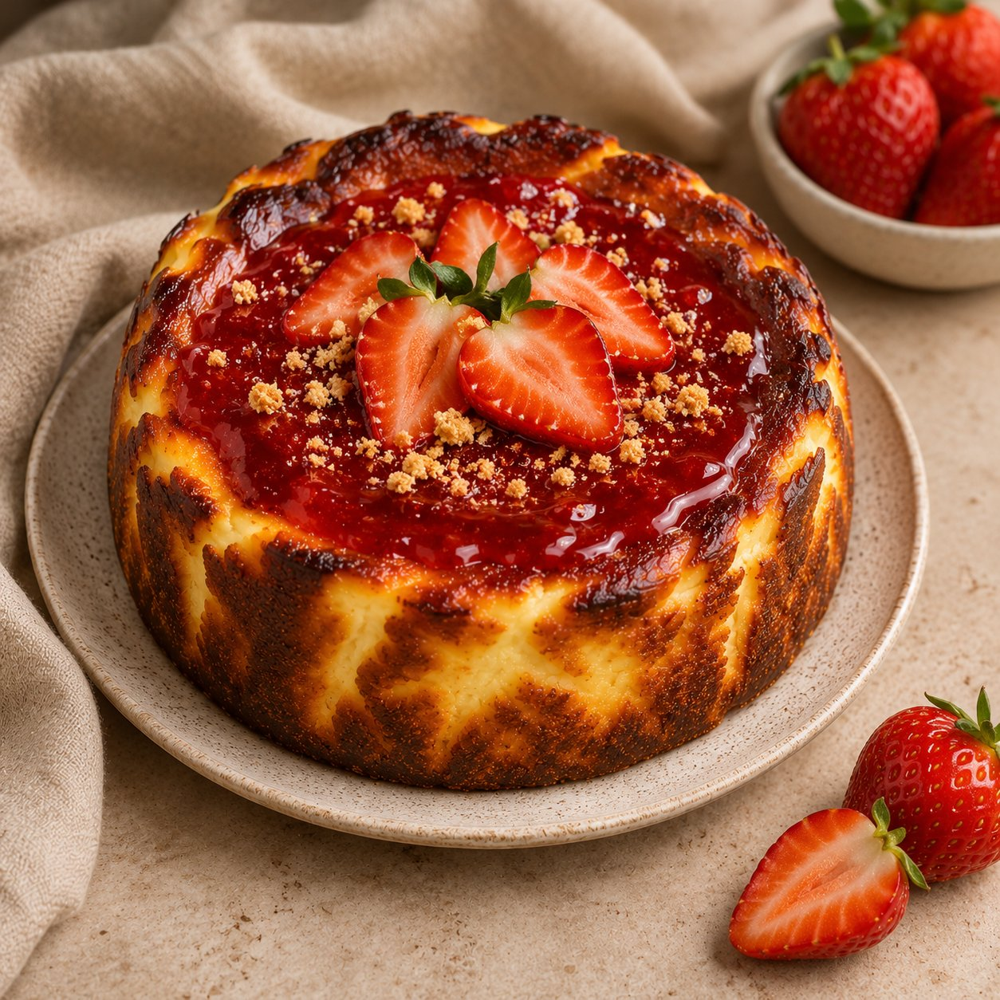
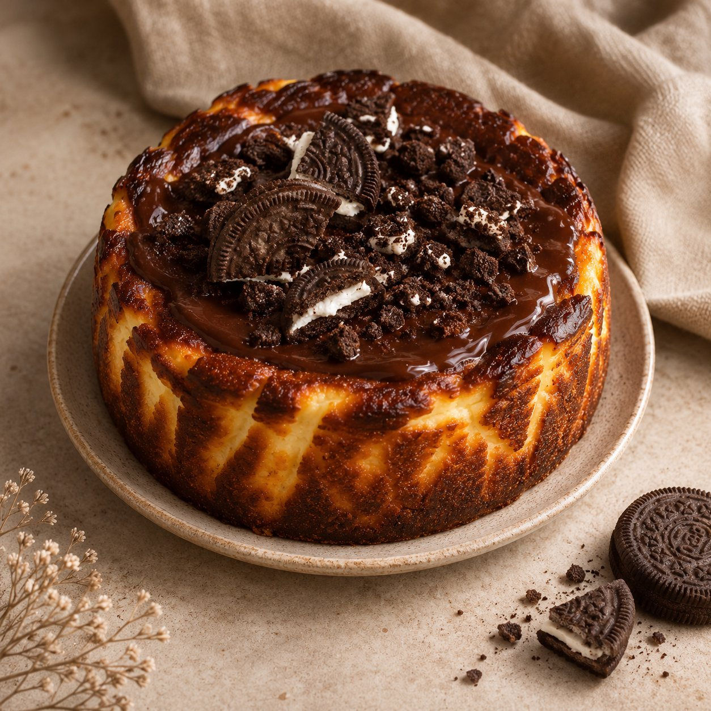
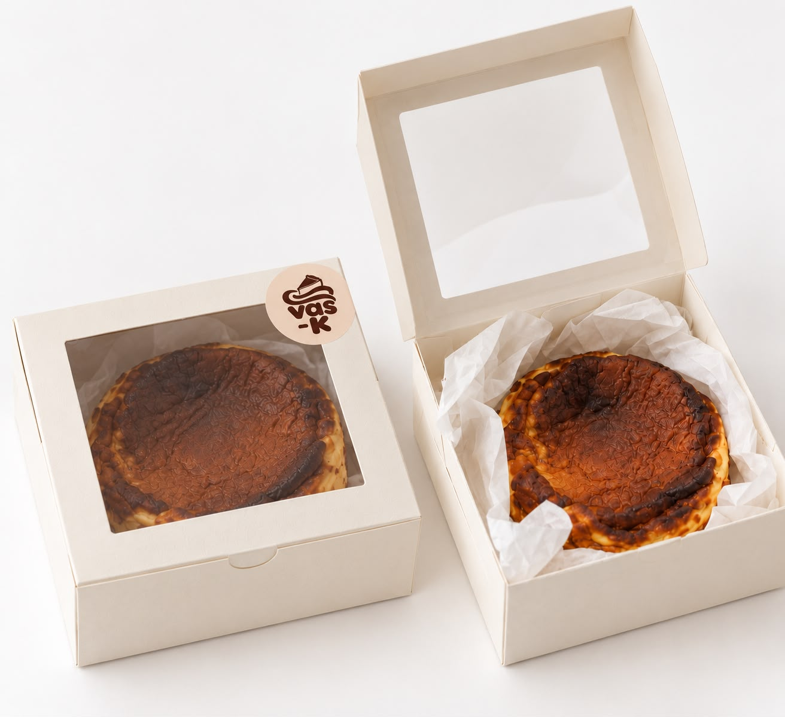
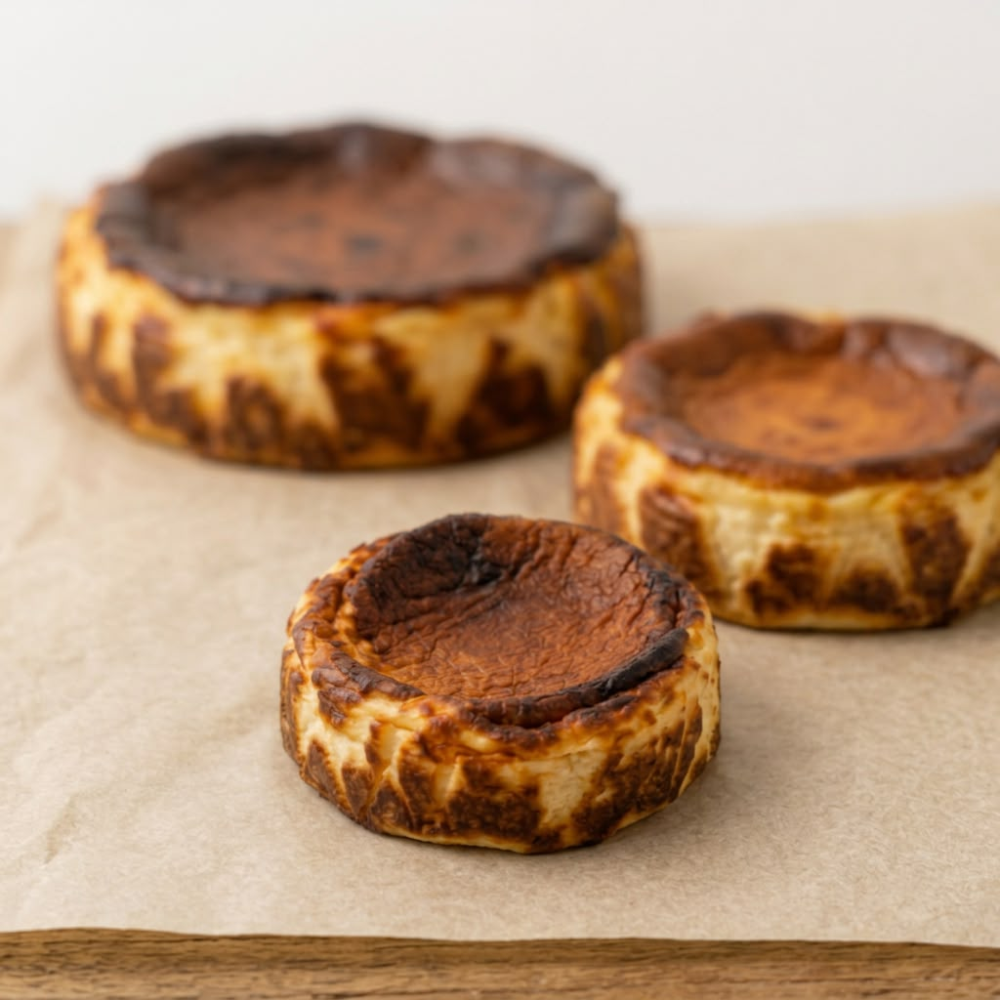

UN FESTÍN PARA LOS SENTIDOS
Hechas para mirar,
imposibles de olvidar.
Una mirada a los sabores, texturas y pequeños detalles que hacen especial cada creación.






¿Ya imaginaste tu próxima celebración?
Elige tu tarta ↗